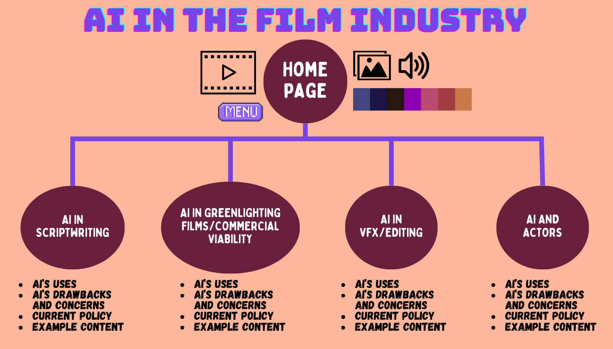

Readings completed:
Elements of Good Story Telling by Ankit Passi
Remember that design is the process of telling a story. Elements of storytelling include the plot, characters, theme, dialogue, melody, decor, spectacle, and conclusion.
Storytelling by the Interaction Design Foundation
For designers, storytelling allows them to get inside the mind of users and emotionally connect to them. Always consider the what, the who, and the how.
My website will not be teaching people how to use AI or the complexities of it, but rather a hub of information and resources about relevant AI technologies in the Film industry and what people are using today. Users will learn potential new ways to do things and develop knowledge. I plan on creating a hierarchical site with different topics and more information on each.
